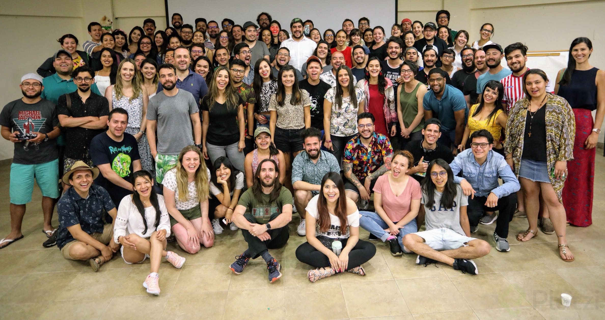

Este tilde o algo arreglado es el encabezado de mi pagina
Estos son los cambios de la rama recuperar
Este es el subtitulo de mi pagina
Este es el contenido con el subtitulo de mi pagina
cambio de la new branch
cambio de la new branch
Esta es la parte principal de mi contenido estoy contribuyendo a mi
propio repositorio remoto desde la consola
este es el cambio para probar el stash
este es el otro cambio hecho en la rama principal-main
Este es el titulo el cual guardare para hacer un stash-reserva
